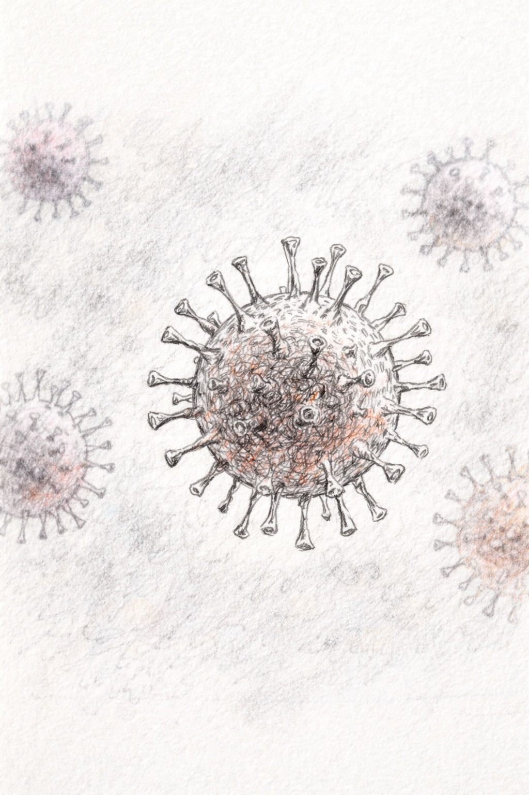
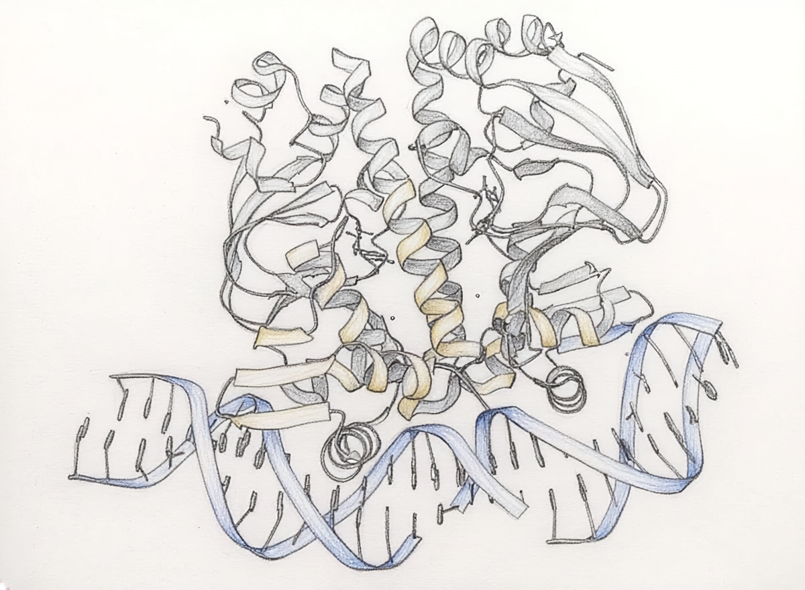

Get in touch
Say hello.
If you're in Bristol, working on something in this space, or just want to grab a coffee and talk through a problem, feel free to get in touch. I'm always up for connecting with others in the field and sharing knowledge.


Senior Data Scientist · PhD · Computational Biology
Data science, ML & drug discovery - and making these tools accessible to everyone.
I'm a Senior Data Scientist bridging computational biology and experimental research, with expertise in machine learning, bioinformatics, and tool development across cancer genomics, immunology, and drug discovery. I think a lot about how AI is changing science - and about making sure those changes reach every researcher, not just those with a computer science or machine learning background. My work tries to do that: building tools, leading interdisciplinary teams, and closing the gap between what these models can do and what researchers can access.

About me
I'm a Senior Data Scientist at Nexus BioQuest, a contract research organisation in Portishead, Bristol, where I work across data science, machine learning, and analytical tool development in support of research programmes spanning pharmaceutical and biotech clients.
My PhD at the University of Bristol, funded by a competitive Cancer Research UK studentship, focused on predicting the functional impact of genetic variants in cancer genomes. I've since worked at Roche, exploring protein language models and antibody optimisation - and published peer-reviewed papers in variant effect prediction during my PhD.
I've also led interdisciplinary teams to back-to-back hackathon wins at Cambridge and the Wellcome Collection, and co-organised Bristol's first AI in Health meeting, catalysing interdisciplinary research. The best science I've been part of has come from people with completely different mental models trying to solve the same problem. It generates questions that nobody in a single-discipline team would ever think to ask, and occasionally, those questions lead somewhere important.
A perspective on AI in science
The tools are being developed, and the clinical evidence is now starting to follow. A significant challenge will now be getting them out of research papers and into the hands of the scientists who could use them to find new medicines, and opening up possibilities for researchers who don't even know what they're missing yet.
"Some of the most powerful tools in the history of biology are sitting in research papers and GitHub repos that most bench scientists have never heard of. Building the bridges to get them there, through upskilling and through teams where computational and experimental scientists learn from each other, is how I think we find the next generation of medicines."
AlphaFold transformed protein structure prediction in 2021 - making accurate structural models accessible for hundreds of millions of proteins where before it had required years of experimental work. AI-designed drugs are now reaching clinical trials. The industry is adapting, with pharma companies partnering with specialist AI firms and embedding AI infrastructure directly into their R&D pipelines. The pace of change is accelerating.
But using these tools well still requires an unusual combination of factors and skills - enough ML to run and adapt the models, the compute infrastructure to work with them, and enough domain knowledge to ask the right questions. Most biologists have one of those things, maybe two. Closing that gap - whether through upskilling or building teams that complement each other's strengths - is something I think the field needs to prioritise in the coming years. This is what drives most of what I build and write about.
A deeper analysis, including the partnerships, clinical evidence, how infrastructure investments could lead to more breakthroughs, and discussions about whether any of this produces better drugs - is in the blog.
Foundation models reshaping biology
Projects & Hackathons
A mix of published tools, hackathon projects, and pipelines built for research problems.
Led the winning team at GetSeen Ventures' AI × Cancer Bio Hackathon. Used transformer encoders on SMILES strings and high-content image embeddings from the RxRx3-core dataset to predict molecular pathways.
Led the winning team at the Roche & HDR Hackathon. Encoded protein sequences with pre-trained language models (ESM, AntiBERT) and explored CNNs to model sequence-function relationships using DMS data from Protein Gym. Secured a Roche AI internship.
Participated in the Alan Turing Institute's Data Study Group in collaboration with Ignota Labs, working on machine learning approaches to predict drug toxicity.
Built a post-acquisition flow cytometry analysis pipeline with an intuitive Streamlit interface for processing and visualising high-dimensional cytometry data, enabling efficient downstream reporting across client projects.
Published a data mining toolkit integrating molecular annotations for SNVs, creating a centralised resource that reduces redundancy and accelerates machine learning model development for variant effect prediction.
At Roche pRED, used TensorFlow models grounded in global epistasis and pre-trained protein language models to predict binding affinity from deep mutational scanning data.
Currently leading a project to automate ELISA data processing and reporting, reducing manual effort across client projects. Mentoring a team member through this project as part of their coding development - with weekly stand-ups, fortnightly code reviews, and task breakdowns.
Co-organised Bristol's first interdisciplinary AI in Health Meeting in collaboration with the Elizabeth Blackwell Institute. Facilitated cross-disciplinary collaboration that resulted in two interdisciplinary grants for applied AI projects.
Skills & Tools
Picked up across academia, industry, and a few hackathons.
Publications
Three peer-reviewed papers and one technical report, spanning cancer genomics, variant effect prediction, and drug discovery.
Get in touch
If you're in Bristol, working on something in this space, or just want to grab a coffee and talk through a problem, feel free to get in touch. I'm always up for connecting with others in the field and sharing knowledge.